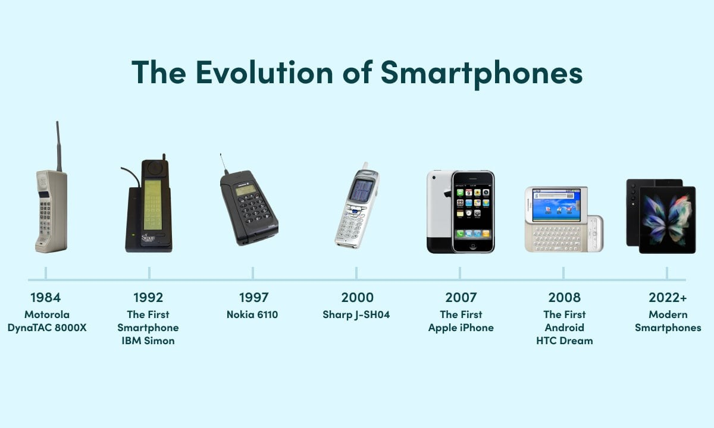

Welcome to the Smartphone Evolution Website
This website explores the history and development of smartphones.
The goal of this website is to provide comprehensive information about the development and impact of smartphones over the years.
The first page covers the period from 1994 to 2007, the second page covers 2008 to 2018, and the third page covers 2019 to the present, talking about the greatest advancements in smartphone technology.